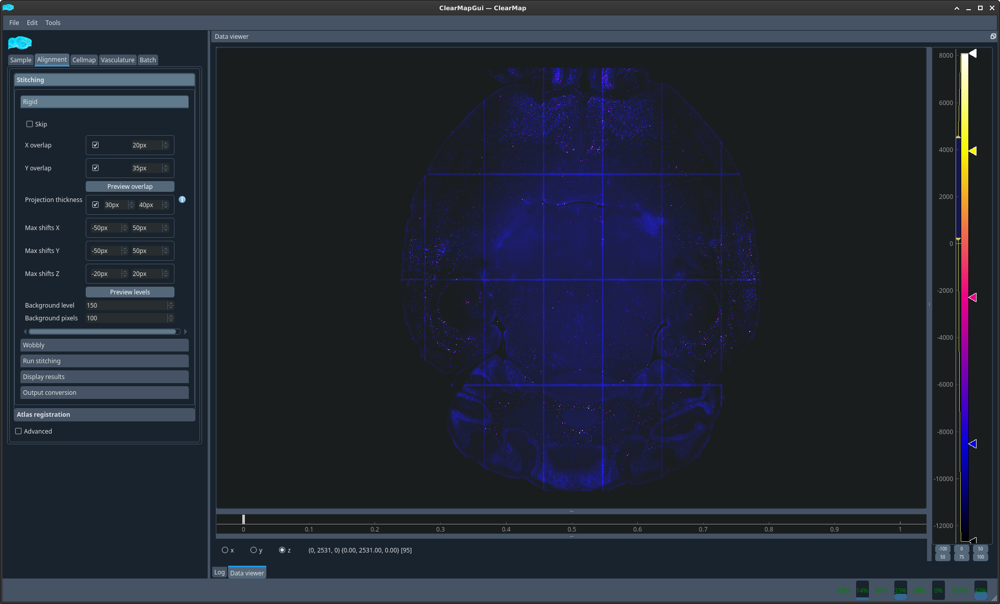
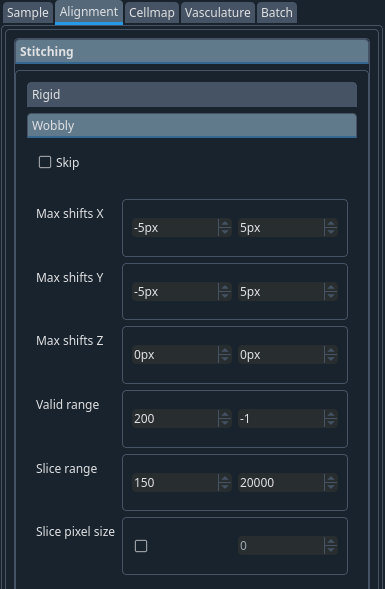

Menu Alignment#
You can now proceed to the alignment (stitching of the tiles and atlas registration)
The stitching is done in two steps. A first alignment is performed where the software tries to find the best overlap of the entire columns of data tiles. This mode is called Rigid stitching. After this step, some further optimisation is applied where the different image planes of the column are allowed to slightly shift relative to each other. This is called Wobbly stitching.

Stitching → Rigid tab#
- X overlap
Expected overlap between tiles along X dimension (in pixels). This is a few percent of the tile dimension in pixels and depends on the microscope.
- Y overlap
Expected overlap between tiles along Y dimension (in pixels) This is a few percent of the tile dimension in pixels and depends on the microscope.
- Projection thickness
Number of planes to average to compute the optimum overlap between X and Y dimensions
Hint
A bit more than the overlap you set for x and y.
Note
Correct these values if you see a systematic problem in the alignment after the stitching.
{kind=link}
You can get an idea of the overlap by clicking the preview overlap button which will display a pre-stitched image stitched only based on a fixed overlap with chessboard colors for adjacent tiles. This is not the same as the stitched image because the overlap has not been optimised, hence why the grid appears.
- Shifts:
Maximum shift (in pixels) from the expected overlap allowed in either direction along a given axis to optimise the alignment (correlograms)
- Background level
Ignore pixels below this value for stitching: e.g. ~400. This value is ideally the same for all the samples but you may need to play with it in order to get the best stitching you can.
Note
This value is used only to compute the optimal overlap for stitching and does not affect your cell detection.
- Background pixels
Number of pixels that need to be above this value to be considered.
Tip
To check these values, click on Preview levels and look at the values (visible at the bottom of the window) for cells, background and outside of the brain.
{kind=link}
Important
This is only a quick preview of the stitching, which is why the stitching grid is visible.
Stitching → Wobbly tab#
Correction for the wobbly movements from the stage of the microscope when you move in z. It is a mechanical shift. Values have to be optimized for each microscope.
- Max shifts Z:
Usually stays 0.
- Ranges
signal range. :FIXME:
- Slice pixel size:
Usually not necessary
Note
Correct these values if you see a one-off problem in the alignment after the stitching.
Stitching → Run stitching tab#
Once the values have been selected, you can proceed to the stitching.
As mentioned above, using the tiles previously converted to .npy can speed stitching but is not required. You can tick this if you chose to convert the tiles in the previous step.
For CellMap, you should just need to tick “Main channel”. Once done, click Run
If you want to ensure that the stitching is being performed as expected, you can look at the CPU bar in the bottom right corner of the interface to see that resources are being used.
Stitching → Display results tab#
For CellMap, tick Main channel. For TubeMap, you will also likely want to look at the secondary channel.
Plot#
Check your results
If you have some tiles completely back you should adjust your background level and restart the stitching before moving forward.
{kind=link}
In the DataViewer sub-window, there is a small vertical bar below the title which you can drag to change the layer to display. Alternatively, you can scroll with the mouse wheel when hovering the title. Scrolling on the image itself zooms.
Change the brightness/contrast and LUT with the controls on the right.
Right click view all to reset the view
Stitching → Output conversion tab#
If you want to save your image in another format (e.g. to visualise them in FIJI), select the channel, the output format and use the convert button. This will output your files in the selected format in the same folder.
Atlas registration → Atlas settings tab#
To segment your data, i.e. assign a brain region to detected cells, you will need to align an atlas to your sample. This is done by aligning a reference image onto which an atlas was drawn and which was acquired with the same modality as your sample to a dedicated channel of your brain which contains only background information and no specific data. This channel is the autofluorescence channel. Because this channel is not acquired concomitantly to your data channels in light sheet microscopy, you will also need to align your autofluorescence channel to your data channel. Since both images come from the same sample, this second step is usually much simpler and only requires rigid registration, which is a combination of rotation, translation, scaling and shearing. On the contrary, the reference to autofluorescence alignment can be more challenging and uses a step of rigid registration followed by a step of elastic registration which involves local deformations of the sample.
Atlas: ABA 2017 – adult mouse – 25 um
Atlas resolution: 25 25 25
Structure tree: ABA json 2022
Note
In future releases, these will become the defaults for the atlas so you won’t have to select them.
Tip
If you want to make these your defaults. You can do so by changing the value in the $HOME/.clearmap/default_alignment_params.cfg file in the relevant section.
Atlas registration → Run registration tab#
Usually. If the sample -> atlas space info parameters were defined correctly, it should suffice to click run. You can then verify the alignment in the next tab (see below).
{kind=link}
Should the alignment not be satisfactory, you could then select Use reference landmarks. A new dialog will appear together with the two images you are trying to align plotted side by side. You should click a feature on the left image that you can also easily pinpoint in the right image and the select add marker to create a new marker and repeat the operation. The number of markers required depends on the difficulty of alignment. For simple alignment mistakes, a handful of markers should suffice. However, this method was successfully used to align whole head MRI scans to LSM brain scans.
In the very unlikely event that the autofluorescence to raw data alignment is not correct, you could do the same with the Use resampled landmarks.
Atlas registration → Display results tab#
You can now display the result of the 2 different alignments discussed above in 2 different ways. Either as an overlay with 2 different colors or side by side with a matching crosshair.
Before proceeding with the analysis you should ensure that the alignments are correct, especially the more troublesome Reference to autofluorescence.
Figure 1 Plot auto to raw composite#
Figure 2 Plot ref to auto side by side#